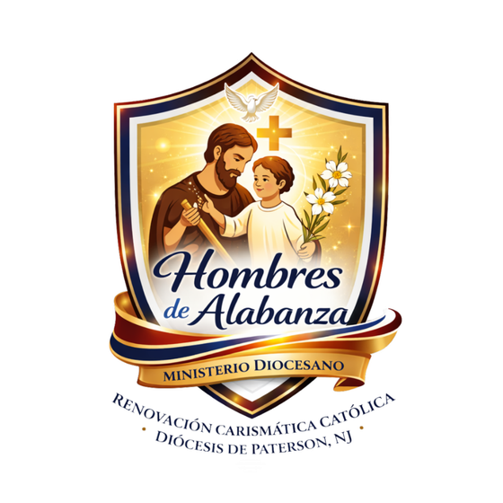
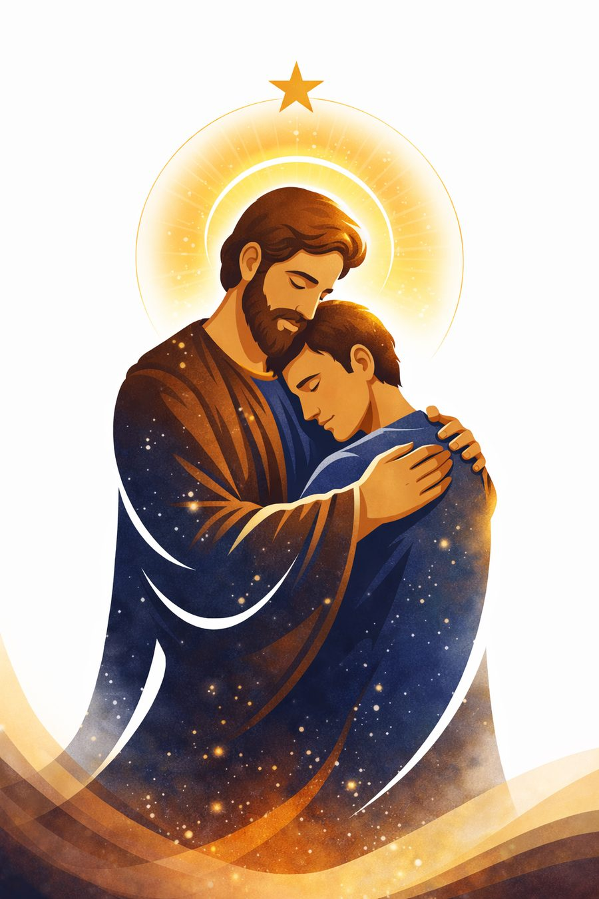

Ministerio Diocesano de Acompañamiento Espiritual para el hombre.
Hombres de Alabanza nace como un ministerio diocesano al servicio del hombre dentro de la Renovación Carismática Católica de la Diócesis de Paterson. Es un espacio de encuentro, fraternidad y acompañamiento espiritual para hombres que desean fortalecer su relación con Dios, crecer en su fe y asumir con valentía su llamado como hijos de Dios, esposos, padres y servidores dentro de la Iglesia y la sociedad.
Este ministerio busca fortalecer al hombre a través de la oración, la alabanza y la acción del Espíritu Santo, ayudándolo a descubrir su identidad en Cristo y a caminar hacia una vida espiritual más plena. Aquí los hombres son llamados a levantarse con fe, a vivir con integridad, a cuidar de sus familias y a ser testimonio vivo del amor de Dios en sus hogares, comunidades y en la Iglesia.
Este llamado nació discernido en oración durante una reunión del Equipo Diocesano, inspirado en hombres de fe como Abraham, Moisés, Josué y San José. Con el tiempo, esta misma inspiración dio origen también a Mujeres de Alabanza y, después, a Jóvenes de Alabanza.

Ser un ministerio diocesano que forme hombres restaurados, firmes en la fe y llenos del Espíritu Santo, capaces de vivir una vida cristiana madura y de alabar a Dios con todo su corazón — hombres que, fortalecidos en Cristo, impacten positivamente a sus familias, comunidades y a la Iglesia.
Caminamos como hermanos en unidad, parte de un mismo Cuerpo en Cristo.
Acogemos a cada hombre con respeto, discreción y misericordia.
Discerniendo en oración cada paso, dóciles a su voz.
“Si hoy estás atravesando momentos de dolor, angustia, confusión o cansancio interior, queremos que sepas que no estás solo. Dios conoce tu corazón y ve cada una de tus luchas... El Señor desea levantarte, restaurar tu corazón y fortalecerte con su amor. Inspirados en el ejemplo de San José, hombre justo y fiel, queremos acompañarte para que redescubras tu identidad como hijo de Dios.”
— Carta Pastoral, Hombres de Alabanza · RCC Paterson NJ